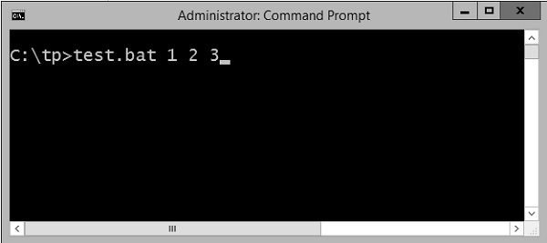

- Batch Script Tutorial
- Batch Script - Home
- Batch Script - Overview
- Batch Script - Environment
- Batch Script - Commands
- Batch Script - Files
- Batch Script - Syntax
- Batch Script - Variables
- Batch Script - Comments
- Batch Script - Strings
- Batch Script - Arrays
- Batch Script - Decision Making
- Batch Script - Operators
- Batch Script - DATE & TIME
- Batch Script - Input / Output
- Batch Script - Return Code
- Batch Script - Functions
- Batch Script - Process
- Batch Script - Aliases
- Batch Script - Devices
- Batch Script - Registry
- Batch Script - Network
- Batch Script - Printing
- Batch Script - Debugging
- Batch Script - Logging
- Batch Script Resources
- Batch Script - Quick Guide
Batch Script - Variables
There are two types of variables in batch files. One is for parameters which can be passed when the batch file is called and the other is done via the set command.
Command Line Arguments
Batch scripts support the concept of command line arguments wherein arguments can be passed to the batch file when invoked. The arguments can be called from the batch files through the variables %1, %2, %3, and so on.
The following example shows a batch file which accepts 3 command line arguments and echo’s them to the command line screen.
@echo off echo %1 echo %2 echo %3
If the above batch script is stored in a file called test.bat and we were to run the batch as
Test.bat 1 2 3
Following is a screenshot of how this would look in the command prompt when the batch file is executed.
The above command produces the following output.
1 2 3
If we were to run the batch as
Example 1 2 3 4
The output would still remain the same as above. However, the fourth parameter would be ignored.
Set Command
The other way in which variables can be initialized is via the ‘set’ command. Following is the syntax of the set command.
Syntax
set /A variable-name=value
where,
variable-name is the name of the variable you want to set.
value is the value which needs to be set against the variable.
/A – This switch is used if the value needs to be numeric in nature.
The following example shows a simple way the set command can be used.
Example
@echo off set message=Hello World echo %message%
In the above code snippet, a variable called message is defined and set with the value of "Hello World".
To display the value of the variable, note that the variable needs to be enclosed in the % sign.
Output
The above command produces the following output.
Hello World
Working with Numeric Values
In batch script, it is also possible to define a variable to hold a numeric value. This can be done by using the /A switch.
The following code shows a simple way in which numeric values can be set with the /A switch.
@echo off SET /A a = 5 SET /A b = 10 SET /A c = %a% + %b% echo %c%
We are first setting the value of 2 variables, a and b to 5 and 10 respectively.
We are adding those values and storing in the variable c.
Finally, we are displaying the value of the variable c.
The output of the above program would be 15.
All of the arithmetic operators work in batch files. The following example shows arithmetic operators can be used in batch files.
@echo off SET /A a = 5 SET /A b = 10 SET /A c = %a% + %b% echo %c% SET /A c = %a% - %b% echo %c% SET /A c = %b% / %a% echo %c% SET /A c = %b% * %a% echo %c%
The above command produces the following output.
15 -5 2 50
Local vs Global Variables
In any programming language, there is an option to mark variables as having some sort of scope, i.e. the section of code on which they can be accessed. Normally, variable having a global scope can be accessed anywhere from a program whereas local scoped variables have a defined boundary in which they can be accessed.
DOS scripting also has a definition for locally and globally scoped variables. By default, variables are global to your entire command prompt session. Call the SETLOCAL command to make variables local to the scope of your script. After calling SETLOCAL, any variable assignments revert upon calling ENDLOCAL, calling EXIT, or when execution reaches the end of file (EOF) in your script. The following example shows the difference when local and global variables are set in the script.
Example
@echo off set globalvar = 5 SETLOCAL set var = 13145 set /A var = %var% + 5 echo %var% echo %globalvar% ENDLOCAL
Few key things to note about the above program.
The ‘globalvar’ is defined with a global scope and is available throughout the entire script.
The ‘var‘ variable is defined in a local scope because it is enclosed between a ‘SETLOCAL’ and ‘ENDLOCAL’ block. Hence, this variable will be destroyed as soon the ‘ENDLOCAL’ statement is executed.
Output
The above command produces the following output.
13150 5
You will notice that the command echo %var% will not yield anything because after the ENDLOCAL statement, the ‘var’ variable will no longer exist.
Working with Environment Variables
If you have variables that would be used across batch files, then it is always preferable to use environment variables. Once the environment variable is defined, it can be accessed via the % sign. The following example shows how to see the JAVA_HOME defined on a system. The JAVA_HOME variable is a key component that is normally used by a wide variety of applications.
@echo off echo %JAVA_HOME%
The output would show the JAVA_HOME directory which would depend from system to system. Following is an example of an output.
C:\Atlassian\Bitbucket\4.0.1\jre